공조냉동기계산업기사 (2016-08-21 기출문제)
1과목: 공기조화
1. 재열기를 통과한 공기의 상태량 중 변화되지 않는 것은?
- 절대습도
- 건구온도
- 상대습도
- 엔탈피
(정답률: 55%)

2. 다음 중 실내로 침입하는 극간풍량을 구하는 방법이 아닌 것은?
- 환기횟수에 의한 방법
- 창문의 틈새길이법
- 창 면적으로 구하는 법
- 실내외 온도차에 의한 방법
(정답률: 61%)
3. 난방부하 계산 시 측정 온도에 대한 설명으로 틀린 것은?
- 외기온도 : 기상대의 통계에 의한 그 지방의 매일 최저온도의 평균값보다 다소 높은 온도
- 실내온도 : 바닥 위 1m의 높이에서 외벽으로부터 1m이내 지점의 온도
- 지중온도 : 지하실의 난방부하의 계산에서 지표면 10m 아래까지의 온도
- 천장 높이에 따른 온도 : 천장의 높이가 3m이상이 되면 직접난방법에 의해서 난방 할 때 방의 윗부분과 밑면 과의 평균온도
(정답률: 80%)
4. 온수배관의 시공 시 주의사항으로 옳은 것은?
- 각 방열기에는 필요시에만 공기배출기를 부착한다.
- 배관 최저부에는 배수밸브를 설치하며, 하향구배로 설치한다.
- 팽창관에는 안전을 위해 반드시 밸브를 설치한다.
- 배관 도중에 관 지름을 바꿀 때에는 편심이음쇠를 사용하지 않는다.
(정답률: 77%)
5. 주철제 방열기의 표준 방열량에 대한 증기 응축수량은? (단, 증기의 증발잠열은 538kcal/kg이다.)
- 0.8kg/m2·h
- 1.0kg/m2·h
- 1.2kg/m2·h
- 1.4kg/m2·h
(정답률: 64%)
6. 밀봉된 용기와 윅(wick) 구조체 및 증기공간에 의하여 구성되며, 길이 방향으로는 증발부, 응축부, 단열부로 구분되는데 한쪽을 가열하면 작동유체는 증발하면서 잠열을 흡수하고 증발된 증기는 저온으로 이동하여 응축되면서 열교환하는 기기의 명칭은?
- 전열 교환기
- 플레이트형 열교환기
- 히트 파이프
- 히트 펌프
(정답률: 76%)
7. 냉방 부하 중 현열만 발생하는 것은?
- 외기부하
- 조명부하
- 인체발생부하
- 틈새바람부하
(정답률: 87%)
8. 다음은 공기조화에서 사용되는 용어에 대한 단위, 정의를 나타낸 것으로 틀린 것은?
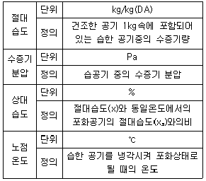
- 절대습도
- 수증기분압
- 상대습도
- 노점온도
(정답률: 74%)
9. 멀티 존 유닛 공조방식에 대한 설명으로 옳은 것은?
- 이중덕트 방식의 덕트 공간을 천장속에 확보할 수 없는 경우 적합하다.
- 멀티 존 방식은 비교적 존 수가 대규모인 건물에 적합하다.
- 각 실의 부하변동이 심해도 각 실에 대한 송풍량의 균형을 쉽게 맞춘다.
- 냉풍과 온풍의 혼합시 댐퍼의 조정은 실내 압력에 의해 제어한다.
(정답률: 50%)
10. 온수 순환량이 560kg/h인 난방설비에서 방열기의 입구온도가 80℃, 출구온도가 72℃라고 하면 이 때 실내에 발산하는 현열량은?
- 4520kcal/h
- 4250kcal/h
- 4480kcal/h
- 4840kcal/h
(정답률: 73%)
11. 아래 조건과 같은 병행류형 냉각코일의 대수평균온도차는?
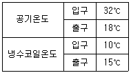
- 8.74℃
- 9.54℃
- 12.33℃
- 13.10℃
(정답률: 66%)
12. 팬코일유닛 방식의 배관 방법에 따른 특징에 관한 설명으로 틀린 것은?
- 3관식에서는 손실열량이 타방식에 비하여 거의 없다.
- 2관식에서는 냉·난방의 동시운전이 불가능하다.
- 4관식은 혼합손실은 없으나 배관의 양이 증가하여 공사비 등이 증가한다.
- 4관식은 동시에 냉·난방운전이 가능하다.
(정답률: 64%)
13. 난방 설비에 관한 설명으로 옳은 것은?
- 온수난방은 온수의 현열과 잠열을 이용한 것이다.
- 온풍난방은 온풍의 현열과 잠열을 이용한 것이다.
- 증기난방은 증기의 현열을 이용한 대류 난방이다.
- 복사난방은 열원에서 나오는 복사에너지를 이용한 것 이다.
(정답률: 86%)
14. 콜드 드래프트(cold draft) 원인으로 틀린 것은?
- 인체 주위의 공기온도가 너무 낮을 때
- 인체 주위의 기류속도가 작을 때
- 주위 벽면의 온도가 낮을 때
- 주위 공기의 습도가 낮을 때
(정답률: 83%)
15. 기계환기 중 송풍기와 배풍기를 이용하며 대규모 보일러실, 변전실 등에 적용하는 환기법은?
- 1종 환기
- 2종 환기
- 3종 환기
- 4종 환기
(정답률: 75%)
16. 유인 유닛(IDU)방식에 대한 설명으로 틀린 것은?
- 각 유닛마다 제어가 가능하므로 개별실 제어가 가능하다.
- 송풍량이 많아서 외기 냉방효과가 크다.
- 냉각, 가열을 동시에 하는 경우 혼합손실이 발생한다.
- 유인 유닛에는 동력배선이 필요 없다.
(정답률: 65%)
17. 매 시간마다 50ton의 석탄을 연소시켜 압력 80kgf/cm2, 온도 500℃의 증기 320ton을 발생시키는 보일러의 효율은? (단, 급수 엔탈피는 120.25kcal/kg, 발생증기 엔탈피 812.6kcal/kg, 석탄의 저위발열량은 5500kcal/kg이다.)
- 78%
- 81%
- 88%
- 92%
(정답률: 48%)
18. 습공기 선도에서 상태점 A의 노점온도를 읽는 방법으로 옳은 것은?
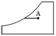
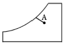
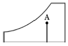
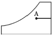
(정답률: 81%)
19. 온풍 난방의 특징으로 틀린 것은?
- 실내온도분포가 좋지 않아 쾌적성이 떨어진다.
- 보수, 취급이 간단하고, 취급에 자격자를 필요로 하지 않는다.
- 설치 면적이 적어서 설치장소에 제한이 없다.
- 열용량이 크므로 착화 즉시 난방이 어렵다.
(정답률: 70%)
20. 실내에 존재하는 습공기의 전열량에 대한 현열량의 비율을 나타낸 것은?
- 바이패스 팩터
- 열수분비
- 현열비
- 잠열비
(정답률: 87%)
2과목: 냉동공학
21. 압축기에서 축마력이 400kW이고, 도시마력은 350kW일 때 기계효율은?
- 75.5%
- 79.5%
- 83.5%
- 87.5%
(정답률: 63%)
22. 절대압력 20bar의 가스 10L가 일정한 온도 10℃에서 절대압력 1bar까지 팽창할 때의 출입한 열량은? (단, 가스는 이상기체로 간주한다.)(오류 신고가 접수된 문제입니다. 반드시 정답과 해설을 확인하시기 바랍니다.)
- 55kJ
- 60kJ
- 65kJ
- 70kJ
(정답률: 48%)
23. 역카르노 사이클에서 고열원을 TH, 저열원을 TL 이라 할 때 성능계수를 나타내는 식으로 옳은 것은?
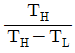
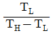
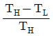
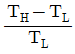
(정답률: 69%)
24. 냉매가 암모니아일 경우는 주로 소형, 프레온일 경우에는 대용량까지 광범위하게 사용되는 응축기로 전열에 양호하고, 설치면적이 적어도 되나 냉각관이 부식되기 쉬운 응축기는?
- 이중관식 응축기
- 입형 셸 엔드 튜브식 응축기
- 횡형 셸 엔드 튜브식 응축기
- 7통로식 횡형 셸 앤드식 응축기
(정답률: 71%)
25. 냉매액이 팽창밸브를 지날 때 냉매의 온도, 압력, 엔탈피의 상태변화를 순서대로 올바르게 나타낸 것은?
- 일정, 감소, 일정
- 일정, 감소, 감소
- 감소, 일정, 일정
- 감소, 감소, 일정
(정답률: 83%)
26. 자연계에 어떠한 변화도 남기지 않고 일정온도의 열을 계속해서 일로 변환시킬 수 있는 기관은 존재하지 않는다를 의미하는 열역학 법칙은?
- 열역학 제0법칙
- 열역학 제1법칙
- 열역학 제2법칙
- 열역학 제3법칙
(정답률: 75%)
27. 다음 냉동기의 T-S선도 중 습압축 사이클에 해당되는 것은?
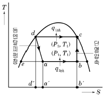
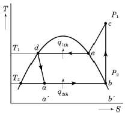
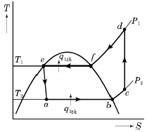
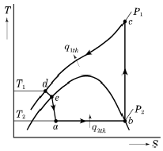
(정답률: 69%)
28. 압축기의 클리어런스가 클 때 나타나는 현상으로 가장 거리가 먼 것은?
- 냉동능력이 감소한다.
- 체적효율이 저하한다.
- 토출가스 온도가 낮아진다.
- 윤활유가 열화 및 탄화된다.
(정답률: 74%)
29. 냉동장치의 냉매 액관 일부에서 발생한 플래쉬 가스가 냉동장치에 미치는 영향으로 옳은 것은?
- 냉매의 일부가 증발하면서 냉동유를 압축기로 재순환시켜 윤활이 잘된다.
- 압축기에 흡입되는 가스에 액체가 혼입되어서 흡입체적효율을 상승시킨다.
- 팽창밸브를 통과하는 냉매의 일부가 기체이므로 냉매의 순환량이 적어져 냉동능력을 감소시킨다.
- 냉매의 증발이 왕성해짐으로서 냉동능력을 증가시킨다.
(정답률: 77%)
30. 왕복동 압축기에서 -30~-70℃ 정도의 저온을 얻기위해서는 2단 압축 방식을 채용한다. 그 이유로 틀린 것은?
- 토출가스의 온도를 높이기 위하여
- 윤활유의 온도 상승을 피하기 위하여
- 압축기의 효율 저하를 막기 위하여
- 성적계수를 높이기 위하여
(정답률: 72%)
31. 하루에 10ton의 얼음을 만드는 제빙장치의 냉동부하는? (단, 물의 온도는 20℃, 생산되는 얼음의 온도는 -5℃이며, 이 때 제빙장치의 효율은 0.8이다.)
- 36280kcal/h
- 46200kcal/h
- 53385kcal/h
- 73200kcal/h
(정답률: 40%)
32. 상태 A에서 B로 가역 단열변화를 할 때 상태변화로 옳은 것은? (단, S : 엔트로피, h : 엔탈피, T : 온도, P: 압력이다.)
- △S=0
- △h=0
- △T=0
- △P=0
(정답률: 66%)
33. 다음 중 스크롤 압축기에 관한 설명으로 틀린 것은?
- 인벌류트 치형의 두 개의 맞물린 스크롤의 부품이 선회운동을 하면서 압축하는 용적형 압축기이다.
- 토그 변동이 적고 압축요소의 미끄럼 속도가 늦다.
- 용량제어 방식으로 슬라이드 밸브방식, 리프트밸브 방식 등이 있다.
- 고정스크롤, 선회스크롤, 자전방지 커플링, 크랭크 축등으로 구성되어 있다.
(정답률: 55%)
34. 고온가스에 의한 제상 시 고온가스의 흐름을 제어하기 위해 사용되는 것으로 가장 적절한 것은?
- 모세관
- 전자밸브
- 체크밸브
- 자동팽창밸브
(정답률: 71%)
35. 냉동장치의 운전 중에 저압이 낮아질 때 일어나는 현상이 아닌 것은?
- 흡입가스 과열 밑 압축비 증대
- 증발온도 저하 및 냉동능력 증대
- 흡입가스의 비체적 증가
- 성적계수 저하 및 냉매순환량 감소
(정답률: 71%)
36. 다음 냉동기의 안전장치와 가장 거리가 먼 것은?
- 가용전
- 안전밸브
- 핫 가스장치
- 고,저압 차단스위치
(정답률: 74%)
37. 응축기에 대한 설명으로 틀린 것은?
- 응축기는 압축기에서 토출한 고온가스를 냉각시킨다.
- 냉매는 응축기에서 냉각수에 의하여 냉각되어 압력이 상승한다.
- 응축기에는 불응축가스가 잔류하는 경우가 있다.
- 응축기 냉각관의 수측에 스케일이 부착되는 경우가 있다.
(정답률: 61%)
38. 냉동장치의 부속기기에 관한 설명으로 옳은 것은?
- 드라이어 필터는 프레온 냉동장치의 흡입배관에 설치해 흡입증기 중의 수분과 찌꺼기를 제거한다.
- 수액기의 크기는 장치내의 냉매순환량만으로 결정한다.
- 운전 중 수액기의 액면계에 기포가 발생하는 경우는 다량의 불응축가스가 들어있기 때문이다.
- 프레온 냉매의 수분 용해도는 작으므로 액 배관 중에 건조기를 부착하면 수분제거에 효과가 있다.
(정답률: 48%)
39. 일반적으로 냉동 운송설비 중 냉동자동차를 냉각장치 및 냉각방법에 따라 분류할 때 그 종류로 가장 거리가 먼 것은?
- 기계식 냉동차
- 액체질소식 냉동차
- 헬륨냉동식 냉동차
- 축냉식 냉동차
(정답률: 70%)
40. 비열에 관한 설명으로 옳은 것은?
- 비열이 큰 물질일수록 빨리 식거나 빨리 더워진다.
- 비열의 단위는 kJ/kg 이다
- 비열이란 어떤 물질 1kg을 1℃ 높이는데 필요한 열량을 말한다.
- 비열비는 정압비열/정적비열로 표시되며 그 값은 R-22가 암모니아 가스보다 크다.
(정답률: 82%)
3과목: 배관일반
41. 배수설비에 대한 설명으로 옳은 것은?
- 소규모 건물에서의 빗물 수직관을 통기관으로 사용 가능하다.
- 회로 통기방식에서 통기되는 기구의 수는 9개 이상으로 한다.
- 배수관에 트랩의 봉수를 보호하기 위해 통기관을 설치한다.
- 배수트랩의 봉수깊이는 5~10mm 정도가 이상적이다.
(정답률: 67%)
42. 고가탱크 급수방식의 특징에 관한 설명으로 틀린 것은?
- 항상 일정한 수압으로 급수할 수 있다.
- 수압의 과대 등에 따른 밸브류 등 배관 부속품의 파손이 적다.
- 취급이 비교적 간단하고 고장이 적다.
- 탱크는 기밀 제작이므로 값이 싸진다.
(정답률: 81%)
43. 급탕배관 시공 시 고려할 사항이 아닌 것은?
- 배관 구배
- 관의 신축
- 배관재료의 선택
- 청소구의 설치장소
(정답률: 82%)
44. 통기관의 종류가 아닌 것은?
- 각개 통기관
- 루프 통기관
- 신정 통기관
- 분해 통기관
(정답률: 77%)
45. 증기난방의 단관 중력 환수식 배관에서 증기와 응축수가 동일한 방향으로 흐르는 증기관순류관의 구배로 적당한 것은?
- 1/50~1/100
- 1/100~1/200
- 1/150~1/250
- 1/200~1/300
(정답률: 59%)
46. 다음 중 무기질 보온재가 아닌 것은?
- 암면
- 펠트
- 규조토
- 탄산마그네슘
(정답률: 67%)
47. 다음 중 네오프렌 패킹을 사용하기에 가장 부적절한 배관은?
- 15℃의 배수배관
- 60℃의 급수배관
- 100℃의 급탕배관
- 180℃의 증기배관
(정답률: 78%)
48. 암모니아 냉동설비의 배관으로 사용하기에 가장 부적절한 배관은?
- 이음매 없는 동관
- 저온 배관용 강관
- 배관용 탄소강 강관
- 배관용 스테인리스 강관
(정답률: 83%)
49. 도시가스 입상 관에 설치하는 밸브는 바닥으로부터 몇 m 범위에 설치해야 하는가? (단, 보호 상자에 설치하는 경우는 제외한다.)
- 0.5m이상 1m이내
- 1m이상 1.5m이내
- 1.6m이상 2m이내
- 2m이상 2.5m이내
(정답률: 72%)
50. 유체를 일정방향으로만 흐르게 하고 역류하는 것을 방지하기 위해 설치하는 밸브는?
- 3방 밸브
- 안전 밸브
- 게이트 밸브
- 체크 밸브
(정답률: 84%)
51. 다음 중 강관 접합법으로 틀린 것은?
- 나사접합
- 플랜지접합
- 압축접합
- 용접접합
(정답률: 80%)
52. 압력탱크식 급수방법에서 압력탱크 설계요소로 가장 거리가 먼 것은?
- 필요 압력
- 탱크의 용적
- 펌프의 양수량
- 펌프의 운전방법
(정답률: 80%)
53. 압축공기 배관시공 시 일반적인 주의사항으로 틀린 것은?
- 공기 공급배관에는 필요한 개소에 드레인용 밸브를 장착한다.
- 주관에서 분기관을 취출할 때에는 관의 하단에 연결하여 이물질 등을 제거한다.
- 용접개소를 가급적 적게 하고 라인의 중간 중간에 여과기를 장착하여 공기 중에 섞인 먼지 등을 제거한다.
- 주관 및 분기관의 관 끝에는 과잉의 압력을 제거하기 위한 불어내기(blow)용 게이트 밸브를 설치한다.
(정답률: 58%)
54. 캐비테이션 현상의 발생조건으로 옳은 것은?
- 흡입양정이 작을 경우 발생한다.
- 액체의 온도가 낮을 경우 발생한다.
- 날개차의 원주속도가 작을 경우 발생한다.
- 날개차의 모양이 적당하지 않을 경우 발생한다.
(정답률: 78%)
55. 건물의 시간당 최대 예상 급탕량이 2000kg/h 일때, 도시가스를 사용하는 급탕용 보일러에서 필요한 가스 소모량은? (단, 급탕온도 60℃, 급수온도 20℃, 도시가스 발열량 15000kcal/kg, 보일러 효율이 95%이며, 열손실 및 예열부하는 무시한다.)
- 5.6kg/h
- 6.6kg/h
- 7.6kg/h
- 8.6kg/h
(정답률: 37%)
56. 냉동장치의 안전장치 중 압축기로의 흡입압력이 소정의 압력 이상이 되었을 경우 과부하에 의한 압축기용 전동기의 위험을 방지하기 위하여 설치되는 밸브는?
- 흡입압력 조정밸브
- 증발압력 조정밸브
- 정압식 자동팽창밸브
- 저압측 플로트밸브
(정답률: 79%)
57. 2가지 종류의 물질을 혼합하면 단독으로 사용할 때 보다 더 낮은 융해온도를 얻을 수 있는 혼합제를 무엇이라고 하는가?
- 부취제
- 기한제
- 브라인
- 에멀션
(정답률: 78%)
58. 증기난방설비에 있어서 응축수 탱크에 모아진 응축수를 펌프로 보일러에 환수시키는 환수 방법은?
- 중력 환수식
- 기계 환수식
- 진공 환수식
- 지역 환수식
(정답률: 66%)
59. 다음 도면 표시기호는 어떤 방식인가?
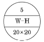
- 5쪽짜리의 횡형 벽걸이 방열기
- 5쪽짜리의 종형 벽걸이 방열기
- 20쪽짜리의 길드 방열기
- 20쪽짜리의 대류 방열기
(정답률: 77%)
60. 다음 중 동일조건에서 열전도율이 가장 큰 관은?
- 알루미늄관
- 강관
- 동관
- 연관
(정답률: 77%)
4과목: 전기제어공학
61. 공업 공정의 제어량을 제어하는 것은?
- 비율제어
- 정치제어
- 프로세스제어
- 프로그램제어
(정답률: 66%)
62. 출력의 변동을 조정하는 동시에 목푯값에 정확히 추종하도록 설계한 제어계는?
- 추치 제어
- 안정 제어
- 타력 제어
- 프로세서 제어
(정답률: 79%)
63. 시퀀스 제어에 관한 설명 중 틀린 것은?
- 조합 논리회로도 사용된다.
- 시간 지연요소도 사용된다.
- 유접점 계전기만 사용된다.
- 제어결과에 따라 조작이 자동적으로 이행된다.
(정답률: 66%)
64. 60Hz, 6극 3상 유도전동기의 전부하에 있어서의 회전수가 1164rpm이다. 슬립은 약 몇 %인가?
- 2
- 3
- 5
- 7
(정답률: 54%)
65. 입력으로 단위 계단함수 u(t)를 가했을 때, 출력이 그림과 같은 동작은?
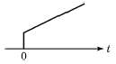
- P 동작
- PD 동작
- PI 동작
- 2위치 동작
(정답률: 59%)
66. 50Hz에서 회전하고 있는 2극 유도전동기의 출력이 20kW일 때 전동기의 토크는 약 몇 N·m 인가?
- 48
- 53
- 64
- 84
(정답률: 39%)
67. 운동계의 각속도 ω는 전기계의 무엇과 대응되는가?
- 저항
- 전류
- 인덕턴스
- 커패시턴스
(정답률: 71%)
68. 반지름 1.5mm, 길이 2km인 도체의 저항이 32Ω이다. 이 도체가 지름이 6mm, 길이가 500m로 변할 경우 저항은 몇 Ω이 되는가?
- 1
- 2
- 3
- 4
(정답률: 46%)
69. 그림의 선도 중 가장 임계 안정한 것은?
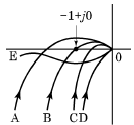
- A
- B
- C
- D
(정답률: 75%)
70. 8Ω, 12Ω, 20Ω, 30Ω의 4개 저항을 병렬로 접속할 때 합성저항은 약 몇 Ω인가?
- 2.0
- 2.35
- 3.43
- 3.8
(정답률: 71%)
71. 연료의 유량과 공기의 유량과의 관계 비율을 연소에 적합하게 유지하고자 하는 제어는?
- 비율제어
- 시퀀스제어
- 프로세서제어
- 프로그램제어
(정답률: 82%)
72. 그림과 같은 Y결선 회로와 등가인 △결선 회로의 Zab, Zbc, Zca값은?
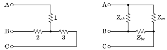
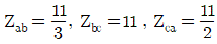
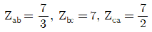
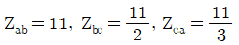
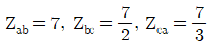
(정답률: 68%)
73. 회전중인 3상 유도전동기의 슬립이 1이 되면 전동기 속도는 어떻게 되는가?
- 불변이다.
- 정지한다.
- 무구속 속도가 된다.
- 동기속도와 같게 된다.
(정답률: 75%)
74. 그림과 같은 시스템의 등가 합성전달함수는?
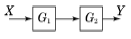
- G1 + G2
- G1 / G2
- G1 - G2
- G1 ㆍ G2
(정답률: 78%)
75. 단위 피드백계에서 C/R=1 즉, 입력과 출력이 같다면 전향전달함수 |G|의 값은?
- |G|=1
- |G|=0
- |G|=∞
- |G|=√2
(정답률: 57%)
76. 논리함수 X=A+AB를 간단히 하면?
- X=A
- X=B
- X=AㆍB
- X=A+B
(정답률: 75%)
77. 정현파 전파 정류 전압의 평균값이 119V이면 최댓값은 약 몇 V인가?
- 119
- 187
- 238
- 357
(정답률: 61%)
78. 전기력선의 기본 성질에 관한 설명으로 틀린 것은?
- 전기력선의 밀도는 전계의 세기와 같다.
- 전기력선의 방향은 그 점의 전계의 방향과 일치한다.
- 전기력선은 전위가 높은 점에서 낮은 점으로 향한다.
- 전기력선은 부전하에서 시작하여 정전하에서 그친다.
(정답률: 57%)
79. 다음 ( ) 안의 ⓐ, ⓑ 에 대한 내용으로 옳은 것은?
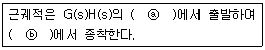
- ⓐ 영점 ⓑ 극점
- ⓐ 극점 ⓑ 영점
- ⓐ 분지점 ⓑ 극점
- ⓐ 극점 ⓑ 분지점
(정답률: 69%)
80. 무효전력을 나타내는 단위는?
- VA
- W
- Var
- Wh
(정답률: 71%)